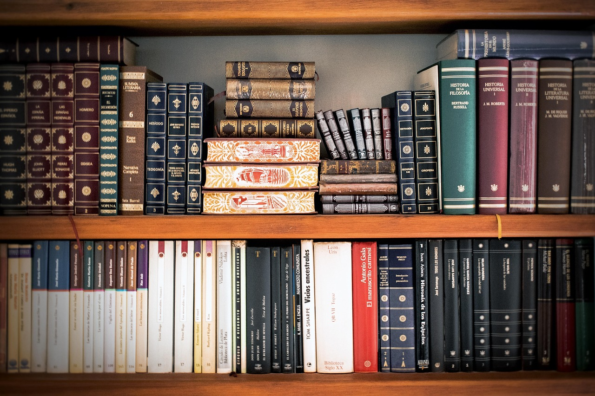
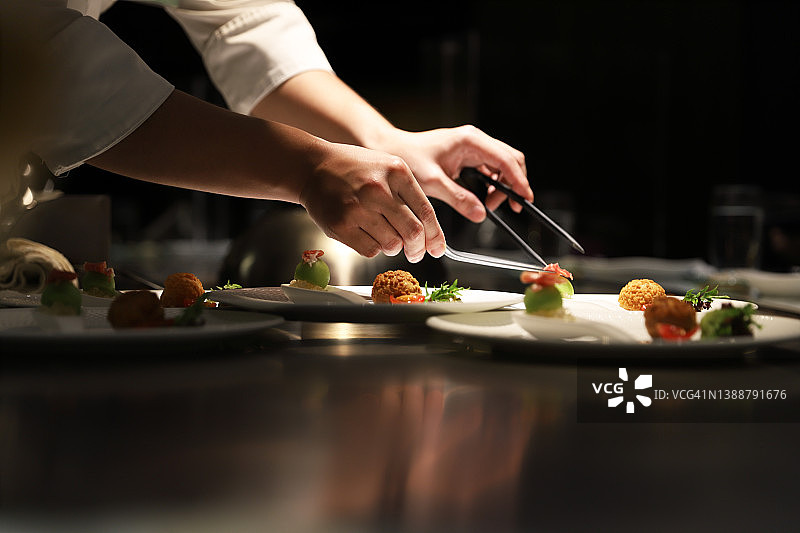
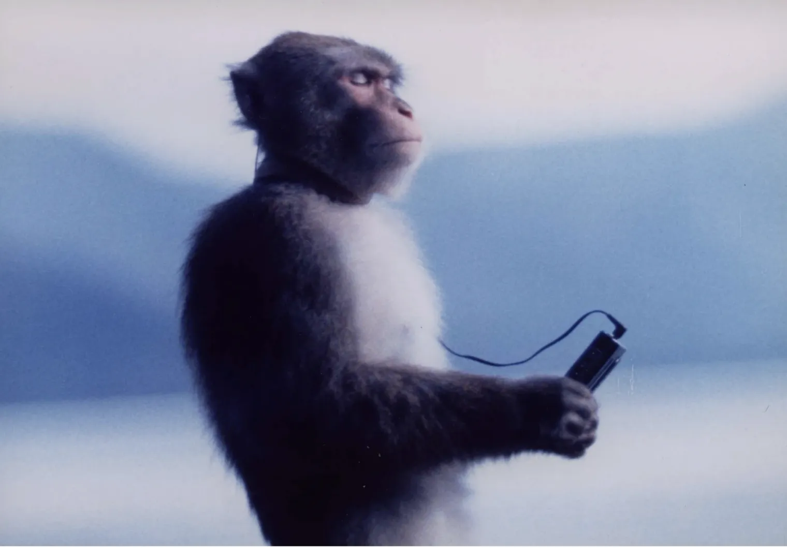

电子游戏
我热爱各类电子游戏，尤其是开放世界和角色扮演类游戏。通过游戏，我能探索无限可能的虚拟世界，体验不同的人生，并结交志同道合的朋友。最喜欢的游戏系列包括《塞尔达传说》、《上古卷轴》和《巫师》系列。

阅读
阅读是我获取知识和放松心情的重要方式。我喜欢科幻、奇幻、哲学和心理学类书籍，它们能开拓我的视野，启发我的思考。每晚睡前阅读半小时已成为我雷打不动的习惯。
户外徒步
户外徒步让我能亲近自然，远离城市的喧嚣。在山林间漫步，呼吸新鲜空气，欣赏壮丽风景，是我放松身心的绝佳方式。我已经走过多条国内知名徒步路线，期待未来挑战更多高难度路线。
编程
编程不仅是我的工作技能，也是我的兴趣爱好。我喜欢通过代码创造各种有趣的项目，解决生活中的小问题。在编程的世界里，逻辑思维和创造力得到了完美结合，带给我无穷的成就感。

烹饪
烹饪是我表达创意的另一种方式。我喜欢尝试不同国家的菜系，研究食材的搭配和烹饪技巧。每当朋友品尝我做的美食并给予赞赏时，那种满足感是无与伦比的。我的拿手好菜包括意大利面、中式炒菜和各种甜点。

音乐欣赏
音乐是我生活中不可或缺的部分。无论是工作、学习还是放松，适合的音乐总能让我进入最佳状态。我的音乐品味广泛，从古典音乐到摇滚、爵士、电子乐都有涉猎。我还在学习弹吉他，希望未来能自弹自唱。
摄影
摄影让我能够捕捉生活中的美好瞬间。我尤其喜欢风景摄影和街拍，通过镜头记录世界的多彩和人生的精彩。学习构图、光线运用等摄影技巧也是一个不断提升自我的过程。